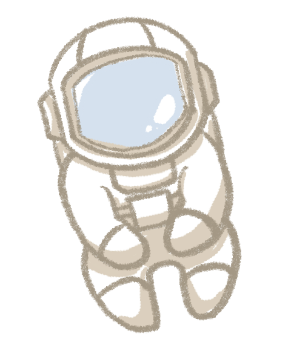

2022 年开始，我受父母之托带弟弟学习小学数学，当时他 6 岁，我高一。每学完一个单元，我都会给他布置 1-2 个与本单元数学内容紧密联系的编程问题，程序采用 Python 语言编写。采用这种 “数学+编程” 的方式，我们平均每两个月完成一个学期的课程，一年左右完成了小学三至五年级的数学学习。
项目库中的文件是我们在这一年中编写的 60 个 Python 程序（22 个图形界面，38 个字符界面），涵盖了人教版小学数学教材三至五年级的 49 个单元。小学数学编程手册.pdf 文件中包含每个单元的主要数学内容和程序介绍。我们还为所有程序添加了详细的文档说明 (Docstring) 和程序注释 (Comment)。
学习手册和所有程序都有英文和中文两个独立版本：英文版程序的屏幕显示内容和程序注释是英文；中文版程序的屏幕显示内容和程序注释是中文。
实践证明，“数学+编程” 让学习者在高效学习数学的同时，还能熟练掌握一门编程语言。

使用本项目高效学习小学数学编程需要满足以下两个条件：
- 对数学和编程感兴趣的小学数学学习者；
- 愿意投入时间精力与孩子共同成长的人，包括但不限于：爸爸妈妈、哥哥姐姐、教师或社区志愿者。
具体使用时分为两种情况：
- 跟随学校进度：本项目可以作为学校数学学习的辅助学习工具，适合想同时学好数学和编程的学习者。
- 按照个人进度：可以按照项目中介绍的学习方法，加速完成小学数学的学习。

2022 年，我弟弟小续 6 岁，爸之前已经带他学完了小学二年级数学。为了让我承担起做哥哥的责任，可能也为了锻炼我吧，爸妈让我负责小续后续的数学和英文学习。我比小续大 10 岁，当时高一，最初约定的目标是在我上大学前，带小续完成小学数学的学习，英文听说读写达到他后续可以自学的水平。我是家里英文最好的，所以带他学英文责无旁贷，可数学怎么学呢？
我是 9 岁时完成的小学数学，回想起来印象已经不深了，只记得当时有段时间经常翻看数学书、做练习题，最后还做了不少小升初的数学卷子。可小续才 6 岁，单纯做题的方式适合他吗？根据我的学习经验，如果一类题总是不会做或做错，通常是对背后的知识点理解有误或理解不深刻。做题的目的应该是找出这些薄弱点加以解决，如果只是一味做题，治标不治本，相同的错误还会一再出现，这也是题海战术效率较低的原因。
为了提高我们的教学效率，最好能找到一种方法，在他大量做题前（例如做卷子），就已经对所学知识和技能有较好的理解和掌握。我作为导师的主要职责是引领、点拨和答疑，还是要靠他自己在解决问题过程中的思考和实践，才能在他的头脑中对知识建立起正确的模型和联系。所以理想的学习环境应该是这样的：小续努力去思考和尝试解决一个问题，而且有人能为他的每次尝试提供快速反馈，让他可以不断修正自己的解题思路和方法。如果那个人不是我，那就只能是电脑。我思来想去最符合这个环境的除了游戏，就是编程了。
确定 “数学+编程” 的另一个原因与我当时做的一个机器学习项目有关。这个项目需要我先学习一些大学数学的课程，我才发现在大学阶段使用编程工具辅助数学学习已经十分普遍，而且效果很好。在学习微积分、线性代数和数理统计时，可以编程做一些数学实验或解决一些实际应用问题，再配合运行结果的可视化展现，这为理解抽象的数学概念和定理提供了极大的帮助。后来我还找到一些中学数学结合编程的学习资源，虽然数量远没有大学的多。但却始终没有找到真正意义上的 “小学数学+编程”。
我和小续商量后决定一起尝试一下。于是 “小学数学+编程” 的学习项目就这样开始了。
除了与小续长达一年的系统性学习，我们期间还举办过几次编程周末活动，每次带领 5-10 个孩子配合他们正在学习的数学知识学习编程，也都收到了不错的效果。我相信数学编程项目可以使更多的孩子受益，提高他们学习数学的效率，增强学习效果，还能顺便掌握一项编程技能。
对于跟随学校进度的孩子，希望项目能够帮助他们提高数学和编程能力。我个人更希望可以有更多的孩子能够像小续一样，快速完成小学阶段的数学学习，并在此基础上大幅拓宽他们的视野，使他们可以提早开始探索并找到他们感兴趣的领域。识字以后就可以开始阅读，掌握了电脑的使用就可以在互联网上查找资料和学习，具备了基础数学技能，也像打开了一扇门。我们完全没想到学习数学竟然发掘了小续对音乐的热情。他用一个音乐 App 自学了乐理和一些钢琴演奏，然后就开始模仿着 App 上的歌曲在电脑上用五线谱进行创作，他现在是音乐制作课上唯一的少儿学员。小续可能具有一些音乐天赋，但数学技能（再加一点编程技能）无疑对他的音乐学习提供了巨大帮助，让他的音乐爱好和特长在早期就得以发展。
希望这个项目可以为大家提供一些数学学习的新思路，并为尝试过这个项目的孩子在成长过程中带来更多可能性。如有关于项目的任何问题与建议，欢迎发邮件至 math-coding@hotmail.com 一同交流探讨。